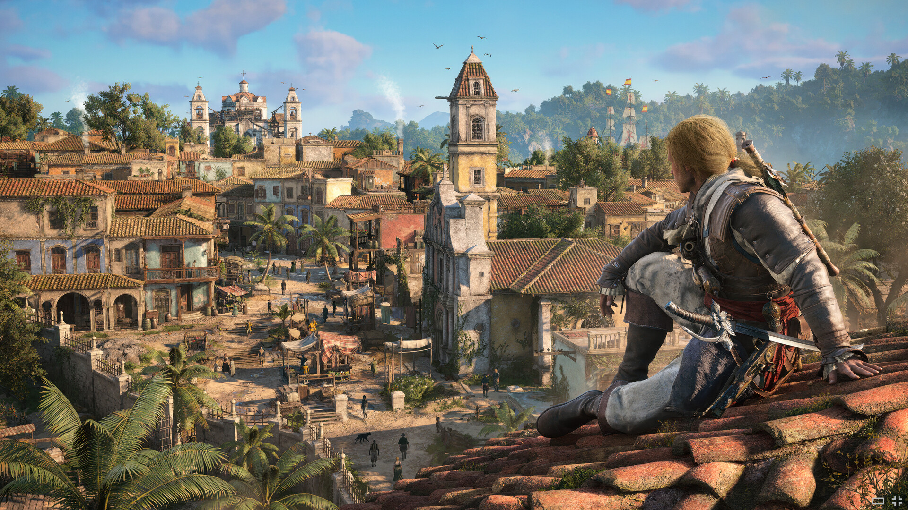
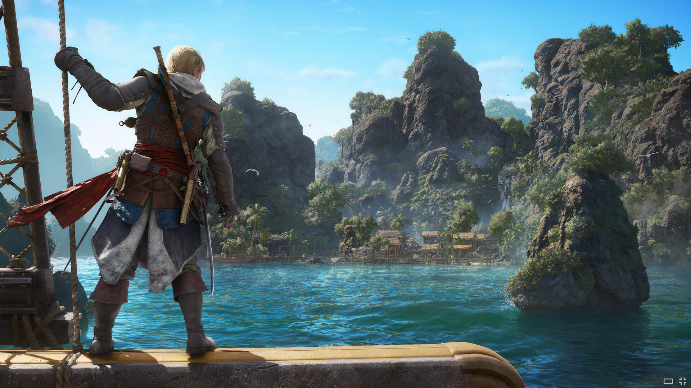
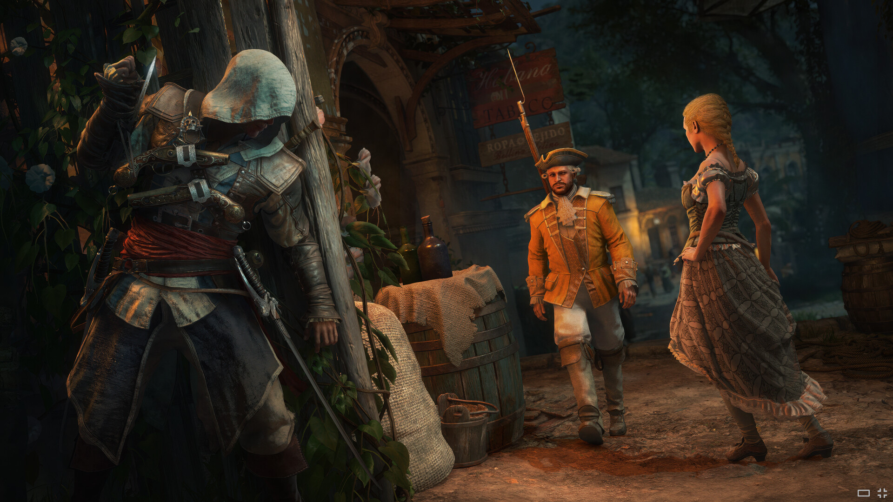
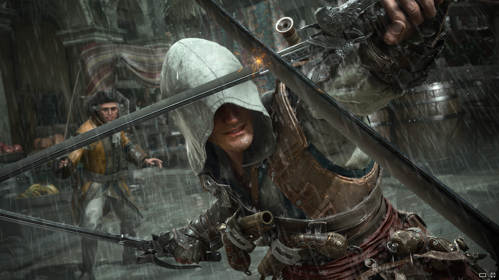
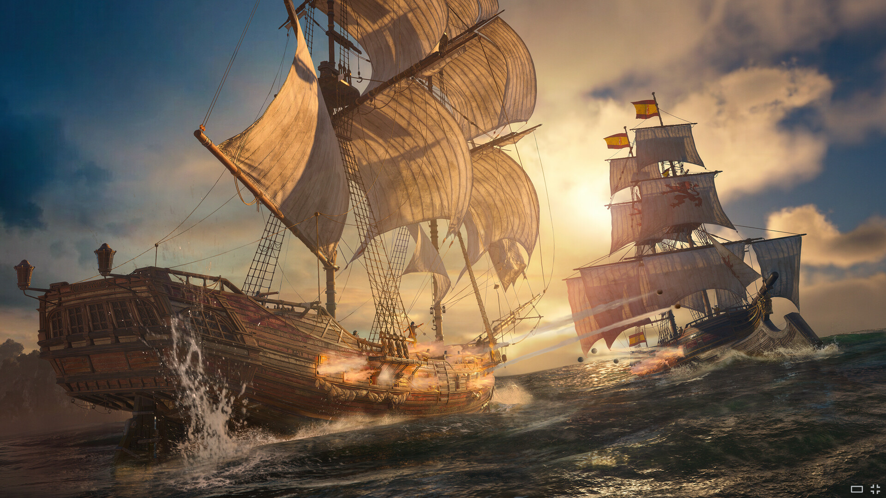
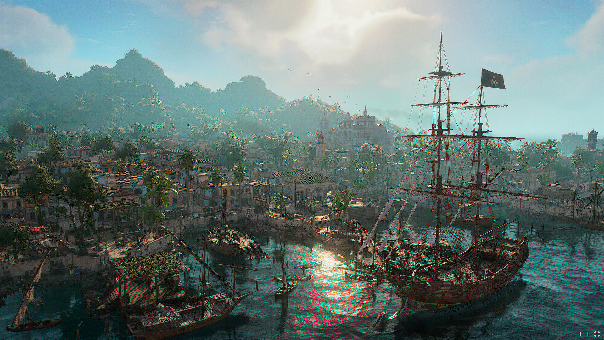
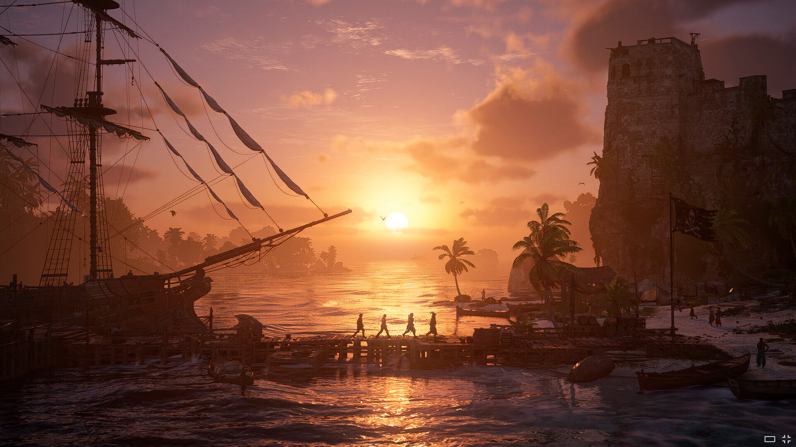

×

Издание
Ознакомиться с изданиямиЭпическая переработка классической матросской песни в исполнении оркестра и хора.







Дата выхода: 9 июля 2026 года
Для тех у кого дух пиратства в крови и ему нетерпиться увидеть знаменитый остров вживую, предлагаем отправиться в путишествие в Нассау.
Расположенный на острове Нью-Провиденс, Нассау был настоящей столицей пиратов в начале XVIII века.
Здесь собирались легендарные пираты того времени - Черная Борода, Чарльз Вэн, «Калико» Джек Рэкхэм -
чтобы разделить добычу, отдохнуть и спланировать новые рейды.